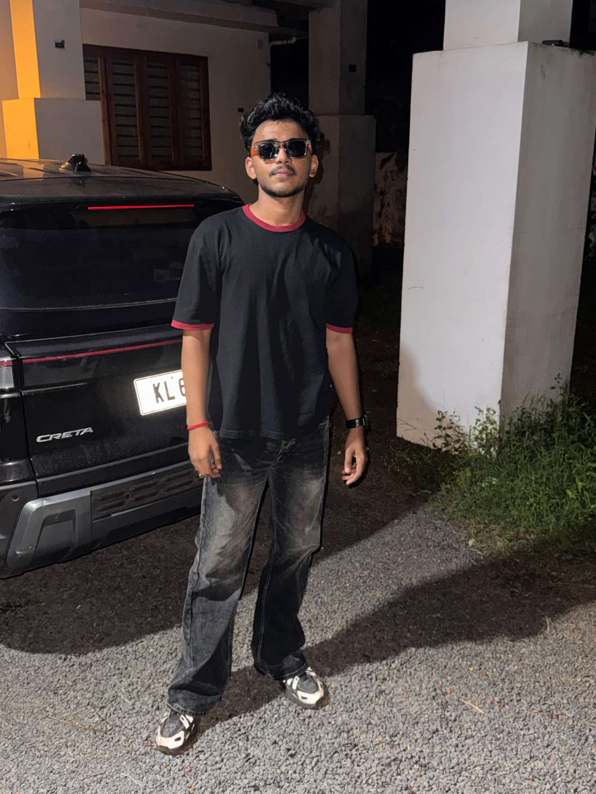

COMPUTER SCIENCE & ENGINEERING — PORTFOLIO 2026
MUHAMMED SINAN / 01
Curiosity into
possibility.
A Computer Science and Engineering student interested in technology, digital marketing, content creation and creative design.

AREAS OF INTERESTTECHNOLOGYDIGITAL MARKETINGCONTENT & CREATIVE DESIGN
01 — SELECTED WORK
VIEW ALL PROJECTS ↗